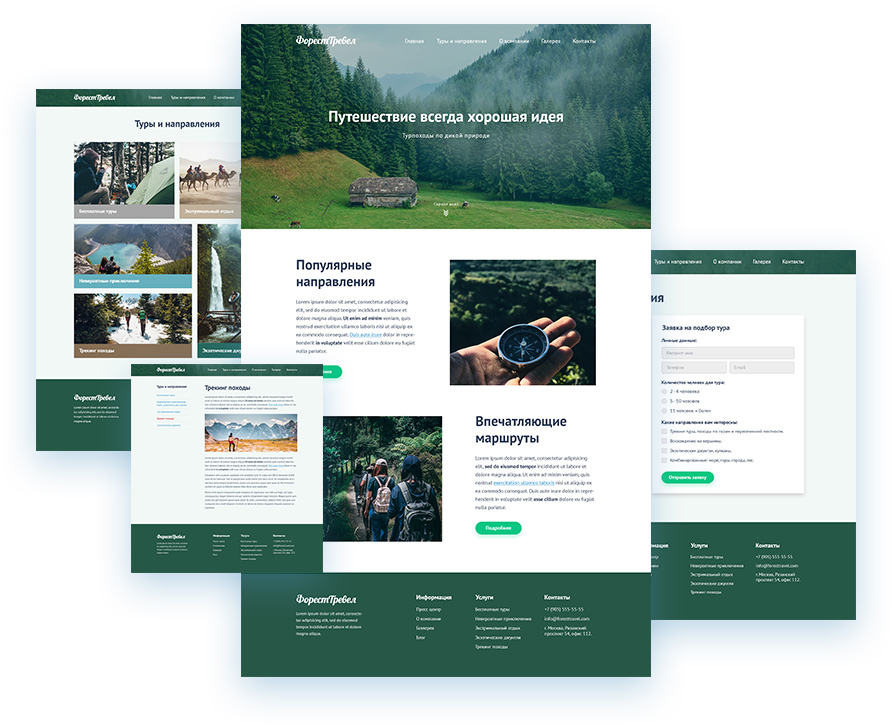

Верстка сайта «Форест-тревел»

Верстка многостраничного сайта. Главная, страница с услугами, карта проезда с формой обратной связи, страница со статьей.
Адрес сайта: site.com

Верстка многостраничного сайта. Главная, страница с услугами, карта проезда с формой обратной связи, страница со статьей.
Адрес сайта: site.com